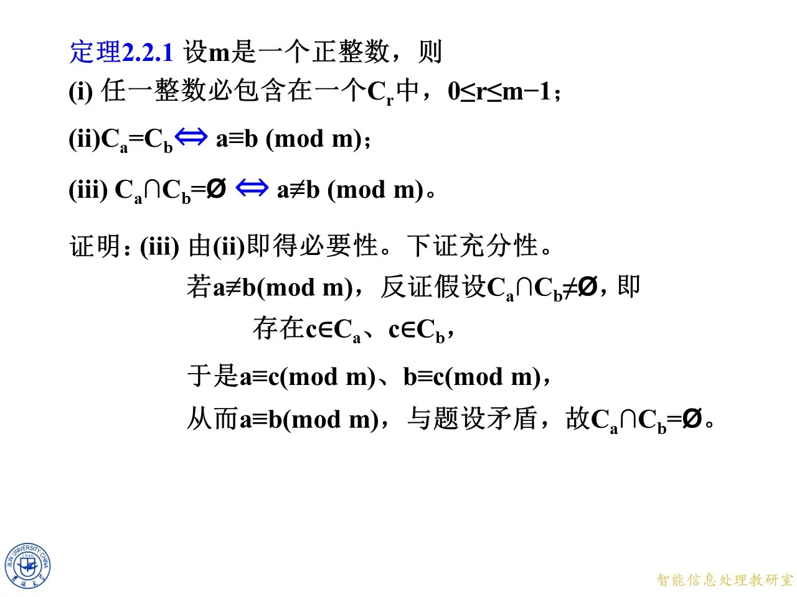
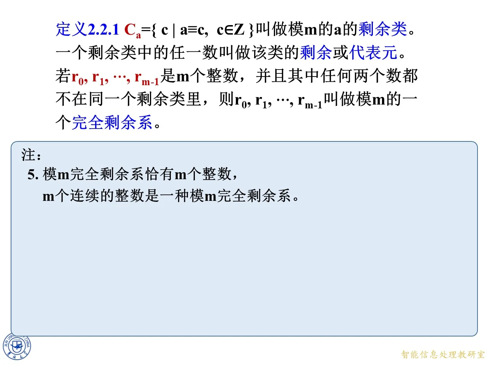
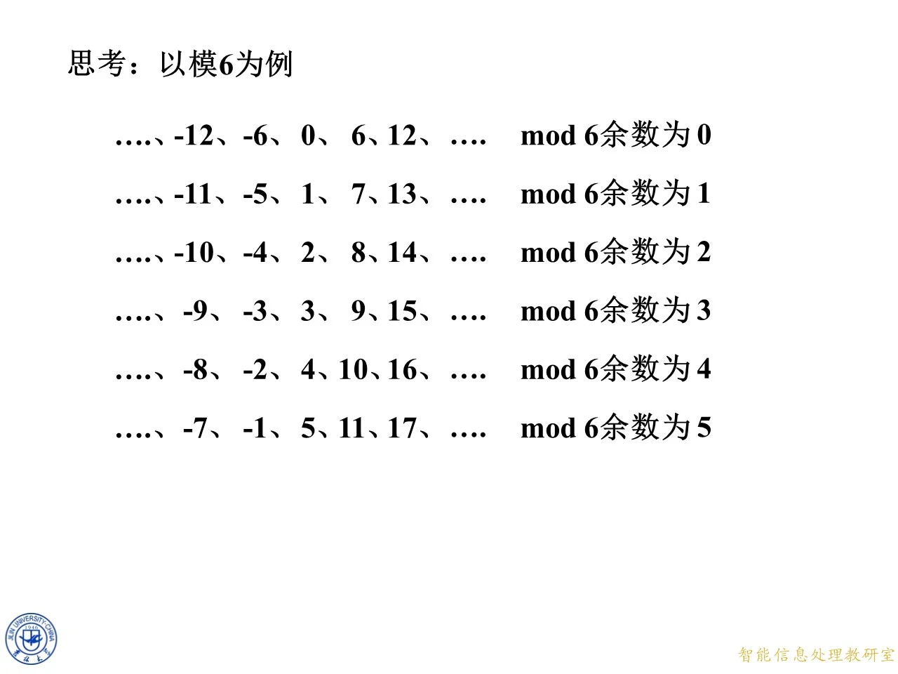

同余把整数分成"一撮一撮"的等价类，本讲就把这件事说清楚：剩余类的定义与三条基本性质、代表元与完全剩余系的概念，以及怎样具体算出一个模的常用完全剩余系。它是第二章的地基——后面的简化剩余系、欧拉函数与一次同余方程全部建立在这些分类概念之上。
2.2.1 剩余类与剩余：从同余到分类
上一节我们学了同余的定义和性质，这一节把眼光从"两个数是否同余"升级到"全体整数如何按同余分组"。核心思想一句话：把所有模 m m m m m m m m m
◆ p.644
本页是 2.2 节的章节封面，列出本节四个小节：2.2.1 剩余类与剩余、2.2.2 完全剩余系、2.2.3 两个模的完全剩余系、2.2.4 多个模的完全剩余系。本课覆盖 2.2.1 的全部内容。
◆ p.645-647 ｜以模 6 为例的直观分类
课件先给一句总纲：把同余（关于模 m m m
余数为 0：… , − 12 , − 6 , 0 , 6 , 12 , … \ldots,-12,-6,0,6,12,\ldots … , − 12 , − 6 , 0 , 6 , 12 , …
余数为 1：… , − 11 , − 5 , 1 , 7 , 13 , … \ldots,-11,-5,1,7,13,\ldots … , − 11 , − 5 , 1 , 7 , 13 , …
余数为 2：… , − 10 , − 4 , 2 , 8 , 14 , … \ldots,-10,-4,2,8,14,\ldots … , − 10 , − 4 , 2 , 8 , 14 , …
余数为 3：… , − 9 , − 3 , 3 , 9 , 15 , … \ldots,-9,-3,3,9,15,\ldots … , − 9 , − 3 , 3 , 9 , 15 , …
余数为 4：… , − 8 , − 2 , 4 , 10 , 16 , … \ldots,-8,-2,4,10,16,\ldots … , − 8 , − 2 , 4 , 10 , 16 , …
余数为 5：… , − 7 , − 1 , 5 , 11 , 17 , … \ldots,-7,-1,5,11,17,\ldots … , − 7 , − 1 , 5 , 11 , 17 , …
注意负数也参与分类：− 5 = 6 × ( − 1 ) + 1 -5=6\times(-1)+1 − 5 = 6 × ( − 1 ) + 1 − 5 -5 − 5 1 , 7 , 13 1,7,13 1 , 7 , 13
◆ p.648-653 ｜剩余类的正式定义 C a C_a C a m m m a a a
C a = { c ∣ a ≡ c ( m o d m ) , c ∈ Z } . C_a=\{\,c \mid a\equiv c \pmod m,\ c\in\mathbb Z\,\}. C a = { c ∣ a ≡ c ( mod m ) , c ∈ Z } .
读法：C a C_a C a a a a m m m C 0 = { … , − 10 , − 5 , 0 , 5 , 10 , … } C_0=\{\ldots,-10,-5,0,5,10,\ldots\} C 0 = { … , − 10 , − 5 , 0 , 5 , 10 , … } C 1 = { … , − 9 , − 4 , 1 , 6 , 11 , … } C_1=\{\ldots,-9,-4,1,6,11,\ldots\} C 1 = { … , − 9 , − 4 , 1 , 6 , 11 , … } C 2 = { … , − 8 , − 3 , 2 , 7 , 12 , … } C_2=\{\ldots,-8,-3,2,7,12,\ldots\} C 2 = { … , − 8 , − 3 , 2 , 7 , 12 , … } C 3 = { … , − 7 , − 2 , 3 , 8 , 13 , … } C_3=\{\ldots,-7,-2,3,8,13,\ldots\} C 3 = { … , − 7 , − 2 , 3 , 8 , 13 , … } C 4 = { … , − 6 , − 1 , 4 , 9 , 14 , … } C_4=\{\ldots,-6,-1,4,9,14,\ldots\} C 4 = { … , − 6 , − 1 , 4 , 9 , 14 , … }
课件随后提出一个关键问题：对任一整数 a a a C a C_a C a a a a a ≡ a ( m o d m ) a\equiv a\pmod m a ≡ a ( mod m ) a ∈ C a a\in C_a a ∈ C a C a ≠ ∅ C_a\ne\varnothing C a = ∅
拓展 （课件外补充）：C a C_a C a C a = a + m Z = { a + k m ∣ k ∈ Z } C_a=a+m\mathbb Z=\{a+km\mid k\in\mathbb Z\} C a = a + m Z = { a + km ∣ k ∈ Z } c ≡ a ( m o d m ) c\equiv a\pmod m c ≡ a ( mod m ) c = a + k m c=a+km c = a + km k k k C a C_a C a a a a m m m C 1 = { … , − 11 , − 5 , 1 , 7 , 13 , … } C_1=\{\ldots,-11,-5,1,7,13,\ldots\} C 1 = { … , − 11 , − 5 , 1 , 7 , 13 , … }
定理 2.2.1：剩余类的三条基本性质
这条定理是剩余类理论的支柱：它说明"按同余分组"分得干净利落——每个整数恰好属于一个类（不重不漏），且"两类相同"与"代表元同余"是同一件事。
◆ p.654-657 ｜定理陈述与 (i) 的证明
定理 2.2.1：设 m m m
任一整数必包含在一个 C r C_r C r 0 ≤ r ≤ m − 1 0\le r\le m-1 0 ≤ r ≤ m − 1
C a = C b ⟺ a ≡ b ( m o d m ) C_a=C_b \iff a\equiv b\pmod m C a = C b ⟺ a ≡ b ( mod m ) C a ∩ C b = ∅ ⟺ a ≢ b ( m o d m ) C_a\cap C_b=\varnothing \iff a\not\equiv b\pmod m C a ∩ C b = ∅ ⟺ a ≡ b ( mod m )
(i) 的证明：设 a a a a a a m m m q , r q,r q , r a = m q + r a=mq+r a = m q + r 0 ≤ r < m 0\le r<m 0 ≤ r < m
a = m q + r , 0 ≤ r < m . a=mq+r,\quad 0\le r<m. a = m q + r , 0 ≤ r < m .
因此 r ≡ a ( m o d m ) r\equiv a\pmod m r ≡ a ( mod m ) a − r = m q a-r=mq a − r = m q m m m a ∈ C r a\in C_r a ∈ C r r r r a a a m m m 0 0 0 m − 1 m-1 m − 1 C r C_r C r r = 0 , 1 , … , m − 1 r=0,1,\ldots,m-1 r = 0 , 1 , … , m − 1
◆ p.658-667 ｜(ii) 的证明：两类相等当且仅当代表元同余
先证必要性（⇒ \Rightarrow ⇒ C a = C b C_a=C_b C a = C b a ∈ C a a\in C_a a ∈ C a C a = C b C_a=C_b C a = C b a ∈ C b a\in C_b a ∈ C b C b C_b C b C b C_b C b b b b m m m a ≡ b ( m o d m ) a\equiv b\pmod m a ≡ b ( mod m )
再证充分性（⇐ \Leftarrow ⇐ a ≡ b ( m o d m ) a\equiv b\pmod m a ≡ b ( mod m ) c ∈ C a c\in C_a c ∈ C a a ≡ c ( m o d m ) a\equiv c\pmod m a ≡ c ( mod m ) a ≡ b ( m o d m ) a\equiv b\pmod m a ≡ b ( mod m ) b ≡ c ( m o d m ) b\equiv c\pmod m b ≡ c ( mod m ) c ∈ C b c\in C_b c ∈ C b C a ⊆ C b C_a\subseteq C_b C a ⊆ C b a , b a,b a , b C b ⊆ C a C_b\subseteq C_a C b ⊆ C a C b = C a C_b=C_a C b = C a
这条性质的实用价值：判断两个剩余类是否相同，不必比较两个无限集合，只需任取两边各一个代表元看它们是否同余。例如模 6 时 C 1 = C 7 C_1=C_7 C 1 = C 7 1 ≡ 7 ( m o d 6 ) 1\equiv7\pmod 6 1 ≡ 7 ( mod 6 )
◆ p.668-675 ｜(iii) 的证明：不同余则两类不交
必要性（⇒ \Rightarrow ⇒ C a ∩ C b = ∅ C_a\cap C_b=\varnothing C a ∩ C b = ∅ a ≢ b ( m o d m ) a\not\equiv b\pmod m a ≡ b ( mod m ) a ≡ b ( m o d m ) a\equiv b\pmod m a ≡ b ( mod m ) C a = C b C_a=C_b C a = C b C a C_a C a a a a
充分性（⇐ \Leftarrow ⇐ a ≢ b ( m o d m ) a\not\equiv b\pmod m a ≡ b ( mod m ) C a ∩ C b = ∅ C_a\cap C_b=\varnothing C a ∩ C b = ∅ C a ∩ C b ≠ ∅ C_a\cap C_b\ne\varnothing C a ∩ C b = ∅ c ∈ C a c\in C_a c ∈ C a c ∈ C b c\in C_b c ∈ C b a ≡ c ( m o d m ) a\equiv c\pmod m a ≡ c ( mod m ) b ≡ c ( m o d m ) b\equiv c\pmod m b ≡ c ( mod m ) c ≡ b ( m o d m ) c\equiv b\pmod m c ≡ b ( mod m ) a ≡ b ( m o d m ) a\equiv b\pmod m a ≡ b ( mod m ) a a a b b b C a ∩ C b = ∅ C_a\cap C_b=\varnothing C a ∩ C b = ∅
(iii) 的完整解读 ：结合 (i)(ii)(iii) 三条，模 m m m Z \mathbb Z Z m m m C 0 , C 1 , … , C m − 1 C_0,C_1,\ldots,C_{m-1} C 0 , C 1 , … , C m − 1
拓展 （课件外补充）：(iii) 的证明核心是"同余的传递性"，它依赖于 m ∣ a − b m\mid a-b m ∣ a − b m ∣ ( a − c ) m\mid(a-c) m ∣ ( a − c ) m ∣ ( c − b ) m\mid(c-b) m ∣ ( c − b ) m ∣ ( a − b ) m\mid(a-b) m ∣ ( a − b )

课件原图 · 第一章第3节-原版 (1) · 第 675 页 查看前后已收录原页 → 定义 2.2.1：剩余、代表元与完全剩余系
◆ p.676-679 ｜定义 2.2.1 与注 1、注 2
定义 2.2.1：C a = { c ∣ a ≡ c , c ∈ Z } C_a=\{\,c\mid a\equiv c,\ c\in\mathbb Z\,\} C a = { c ∣ a ≡ c , c ∈ Z } m m m a a a 剩余类 ；一个剩余类中的任一数叫做该类的剩余 或代表元 。若 r 0 , r 1 , … , r m − 1 r_0,r_1,\ldots,r_{m-1} r 0 , r 1 , … , r m − 1 m m m r 0 , r 1 , … , r m − 1 r_0,r_1,\ldots,r_{m-1} r 0 , r 1 , … , r m − 1 m m m 完全剩余系 。
注 1：剩余类实际上就是由模 m m m
注 2：模 m m m m m m C 0 , C 1 , … , C m − 1 C_0,C_1,\ldots,C_{m-1} C 0 , C 1 , … , C m − 1 m m m
◆ p.680-682 ｜注 3 与注 4：剩余类的记号与剩余类运算
注 3：通常将模 m m m Z / m Z = { C 0 , C 1 , … , C m − 1 } \mathbb Z/m\mathbb Z=\{C_0,C_1,\ldots,C_{m-1}\} Z / m Z = { C 0 , C 1 , … , C m − 1 } { C a ∣ 0 ≤ a ≤ m − 1 } \{C_a\mid 0\le a\le m-1\} { C a ∣ 0 ≤ a ≤ m − 1 } m = p m=p m = p F p = { C 0 , C 1 , … , C p − 1 } \mathbb F_p=\{C_0,C_1,\ldots,C_{p-1}\} F p = { C 0 , C 1 , … , C p − 1 } F p \mathbb F_p F p
注 4：根据定理 2.1.4（同余的运算性质：同余的数相加、相乘仍同余），可以在 Z / m Z \mathbb Z/m\mathbb Z Z / m Z 剩余类运算 ：
C a ⊕ C b : = C a + b , C a ⊗ C b : = C a × b . C_a\oplus C_b:=C_{a+b},\qquad C_a\otimes C_b:=C_{a\times b}. C a ⊕ C b := C a + b , C a ⊗ C b := C a × b .
即两个类"相加"，就是把各自的代表元相加，取结果所在的类；乘法同理。课件用红字强调：这种运算不依赖代表元 a , b a,b a , b ，也就是说这个剩余类加乘运算的定义不会产生矛盾。
拓展 （课件外补充）：为什么不会矛盾？若换代表元，设 a ′ = a + u m a'=a+um a ′ = a + u m b ′ = b + v m b'=b+vm b ′ = b + v m u , v u,v u , v a ′ + b ′ = a + b + ( u + v ) m a'+b'=a+b+(u+v)m a ′ + b ′ = a + b + ( u + v ) m a + b a+b a + b m m m C a ′ + b ′ = C a + b C_{a'+b'}=C_{a+b} C a ′ + b ′ = C a + b a ′ b ′ = a b + ( u b + v a + u v m ) m a'b'=ab+(ub+va+uvm)m a ′ b ′ = ab + ( u b + v a + uv m ) m a b ab ab m m m C a ′ b ′ = C a b C_{a'b'}=C_{ab} C a ′ b ′ = C ab
◆ p.683-686 ｜注 5：完全剩余系的规模
注 5：模 m m m m m m m m m m m m m m m m m m m m m m m m m m m

课件原图 · 第一章第3节-原版 (1) · 第 686 页 查看前后已收录原页 → 例 1 与例 2：具体算出剩余类和常用完系——例 1：模 6 的全部剩余类
◆ p.687
例 1：设正整数 m = 6 m=6 m = 6 a a a C a = { a + 6 k ∣ k ∈ Z } C_a=\{a+6k\mid k\in\mathbb Z\} C a = { a + 6 k ∣ k ∈ Z } m = 6 m=6 m = 6
C 0 = { 6 k + 0 ∣ k ∈ Z } = { … , − 12 , − 6 , 0 , 6 , 12 , … } C_0=\{6k+0\mid k\in\mathbb Z\}=\{\ldots,-12,-6,0,6,12,\ldots\} C 0 = { 6 k + 0 ∣ k ∈ Z } = { … , − 12 , − 6 , 0 , 6 , 12 , … } C 1 = { 6 k + 1 ∣ k ∈ Z } = { … , − 11 , − 5 , 1 , 7 , 13 , … } C_1=\{6k+1\mid k\in\mathbb Z\}=\{\ldots,-11,-5,1,7,13,\ldots\} C 1 = { 6 k + 1 ∣ k ∈ Z } = { … , − 11 , − 5 , 1 , 7 , 13 , … } C 2 = { 6 k + 2 ∣ k ∈ Z } = { … , − 10 , − 4 , 2 , 8 , 14 , … } C_2=\{6k+2\mid k\in\mathbb Z\}=\{\ldots,-10,-4,2,8,14,\ldots\} C 2 = { 6 k + 2 ∣ k ∈ Z } = { … , − 10 , − 4 , 2 , 8 , 14 , … } C 3 = { 6 k + 3 ∣ k ∈ Z } = { … , − 9 , − 3 , 3 , 9 , 15 , … } C_3=\{6k+3\mid k\in\mathbb Z\}=\{\ldots,-9,-3,3,9,15,\ldots\} C 3 = { 6 k + 3 ∣ k ∈ Z } = { … , − 9 , − 3 , 3 , 9 , 15 , … } C 4 = { 6 k + 4 ∣ k ∈ Z } = { … , − 8 , − 2 , 4 , 10 , 16 , … } C_4=\{6k+4\mid k\in\mathbb Z\}=\{\ldots,-8,-2,4,10,16,\ldots\} C 4 = { 6 k + 4 ∣ k ∈ Z } = { … , − 8 , − 2 , 4 , 10 , 16 , … } C 5 = { 6 k + 5 ∣ k ∈ Z } = { … , − 7 , − 1 , 5 , 11 , 17 , … } C_5=\{6k+5\mid k\in\mathbb Z\}=\{\ldots,-7,-1,5,11,17,\ldots\} C 5 = { 6 k + 5 ∣ k ∈ Z } = { … , − 7 , − 1 , 5 , 11 , 17 , … }
每行取 k = … , − 2 , − 1 , 0 , 1 , 2 , … k=\ldots,-2,-1,0,1,2,\ldots k = … , − 2 , − 1 , 0 , 1 , 2 , … C 3 C_3 C 3 k = − 2 , − 1 , 0 , 1 , 2 k=-2,-1,0,1,2 k = − 2 , − 1 , 0 , 1 , 2 − 9 , − 3 , 3 , 9 , 15 -9,-3,3,9,15 − 9 , − 3 , 3 , 9 , 15 0 , 1 , 2 , 3 , 4 , 5 0,1,2,3,4,5 0 , 1 , 2 , 3 , 4 , 5
◆ p.688-690 ｜换几组完全剩余系
同一张幻灯片用动画依次展示更多完系（每行六个数，逐行验证其对 6 的余数恰为 0 , 1 , 2 , 3 , 4 , 5 0,1,2,3,4,5 0 , 1 , 2 , 3 , 4 , 5
1 , 2 , 3 , 4 , 5 , 6 1,2,3,4,5,6 1 , 2 , 3 , 4 , 5 , 6 1 , 2 , 3 , 4 , 5 , 0 1,2,3,4,5,0 1 , 2 , 3 , 4 , 5 , 0 − 1 , 0 , 1 , 2 , 3 , 4 -1,0,1,2,3,4 − 1 , 0 , 1 , 2 , 3 , 4 5 , 0 , 1 , 2 , 3 , 4 5,0,1,2,3,4 5 , 0 , 1 , 2 , 3 , 4 − 12 , − 5 , − 4 , 3 , 10 , 17 -12,-5,-4,3,10,17 − 12 , − 5 , − 4 , 3 , 10 , 17 − 12 m o d 6 = 0 -12\bmod 6=0 − 12 mod 6 = 0 − 5 m o d 6 = 1 -5\bmod 6=1 − 5 mod 6 = 1 − 4 m o d 6 = 2 -4\bmod 6=2 − 4 mod 6 = 2 3 m o d 6 = 3 3\bmod 6=3 3 mod 6 = 3 10 m o d 6 = 4 10\bmod 6=4 10 mod 6 = 4 17 m o d 6 = 5 17\bmod 6=5 17 mod 6 = 5
拓展 （课件外补充）：判别口诀——m m m m m m ⟺ \iff ⟺ m m m m m m 0 0 0 m − 1 m-1 m − 1 − 5 + 6 = 1 -5+6=1 − 5 + 6 = 1
例 2：常用的五种完全剩余系
◆ p.691
例 2 前半：设 m m m m m m
最小非负完全剩余系：0 , 1 , 2 , … , m − 1 0,1,2,\ldots,m-1 0 , 1 , 2 , … , m − 1
最小正完全剩余系：1 , 2 , … , m − 1 , m 1,2,\ldots,m-1,m 1 , 2 , … , m − 1 , m
最大非正完全剩余系：− ( m − 1 ) , − ( m − 2 ) , … , − 1 , 0 -(m-1),-(m-2),\ldots,-1,0 − ( m − 1 ) , − ( m − 2 ) , … , − 1 , 0
最大负完全剩余系：− m , − ( m − 1 ) , − ( m − 2 ) , … , − 2 , − 1 -m,-(m-1),-(m-2),\ldots,-2,-1 − m , − ( m − 1 ) , − ( m − 2 ) , … , − 2 , − 1
逐一核对第 1 组：每个数就是自己的余数，显然完系；第 2 组把 0 0 0 m m m m ≡ 0 ( m o d m ) m\equiv0\pmod m m ≡ 0 ( mod m ) m m m 1 , … , m 1,\ldots,m 1 , … , m 0 , … , m − 1 0,\ldots,m-1 0 , … , m − 1 m m m
◆ p.692 ｜绝对值最小完全剩余系
例 2 后半给出第 (5) 种——绝对值最小完全剩余系，分奇偶讨论：
若 m m m
− m 2 , − m 2 + 1 , … , − 1 , 0 , 1 , … , m 2 − 1 -\frac{m}{2},\ -\frac{m}{2}+1,\ \ldots,\ -1,\ 0,\ 1,\ \ldots,\ \frac{m}{2}-1 − 2 m , − 2 m + 1 , … , − 1 , 0 , 1 , … , 2 m − 1
或
− m 2 + 1 , … , − 1 , 0 , 1 , … , m 2 − 1 , m 2 -\frac{m}{2}+1,\ \ldots,\ -1,\ 0,\ 1,\ \ldots,\ \frac{m}{2}-1,\ \frac{m}{2} − 2 m + 1 , … , − 1 , 0 , 1 , … , 2 m − 1 , 2 m
都是模 m m m m = 6 m=6 m = 6 − 3 , − 2 , − 1 , 0 , 1 , 2 -3,-2,-1,0,1,2 − 3 , − 2 , − 1 , 0 , 1 , 2 3 , 4 , 5 , 0 , 1 , 2 3,4,5,0,1,2 3 , 4 , 5 , 0 , 1 , 2 − 2 , − 1 , 0 , 1 , 2 , 3 -2,-1,0,1,2,3 − 2 , − 1 , 0 , 1 , 2 , 3 4 , 5 , 0 , 1 , 2 , 3 4,5,0,1,2,3 4 , 5 , 0 , 1 , 2 , 3 − m 2 -\frac m2 − 2 m m 2 \frac m2 2 m m m m
若 m m m
− m − 1 2 , − m + 1 2 , … , − 1 , 0 , 1 , … , m − 1 2 -\frac{m-1}{2},\ -\frac{m+1}{2},\ \ldots,\ -1,\ 0,\ 1,\ \ldots,\ \frac{m-1}{2} − 2 m − 1 , − 2 m + 1 , … , − 1 , 0 , 1 , … , 2 m − 1
也是模 m m m 注：课件原式的第二项 − m + 1 2 -\frac{m+1}{2} − 2 m + 1 ——它比首项 − m − 1 2 -\frac{m-1}{2} − 2 m − 1 − m − 1 2 -\frac{m-1}{2} − 2 m − 1 m − 1 2 \frac{m-1}{2} 2 m − 1 m m m m = 7 m=7 m = 7 − 3 , − 2 , − 1 , 0 , 1 , 2 , 3 -3,-2,-1,0,1,2,3 − 3 , − 2 , − 1 , 0 , 1 , 2 , 3 4 , 5 , 6 , 0 , 1 , 2 , 3 4,5,6,0,1,2,3 4 , 5 , 6 , 0 , 1 , 2 , 3 0 0 0 6 6 6 − m 2 -\frac m2 − 2 m m 2 \frac m2 2 m
拓展 （课件外补充）：绝对值最小完系是手算幂运算的好帮手——模 26 加解密、模 251 之类的计算中，把中间结果化到 − 12 … 13 -12\ldots13 − 12 … 13
思考：怎样判断完全剩余系
◆ p.693-695
课件思考题：给定 m m m m m m − 6 , − 11 , 2 , 9 , − 2 , 11 -6,-11,2,9,-2,11 − 6 , − 11 , 2 , 9 , − 2 , 11
判定法则（课件页底给出的结论）：任意 m m m m m m m m m 。理由分两步：其一，共有 m m m m m m m m m m m m m m m
具体验证 − 6 , − 11 , 2 , 9 , − 2 , 11 -6,-11,2,9,-2,11 − 6 , − 11 , 2 , 9 , − 2 , 11 − 6 m o d 6 = 0 -6\bmod 6=0 − 6 mod 6 = 0 − 11 m o d 6 = 1 -11\bmod 6=1 − 11 mod 6 = 1 − 11 + 12 = 1 -11+12=1 − 11 + 12 = 1 2 m o d 6 = 2 2\bmod 6=2 2 mod 6 = 2 9 m o d 6 = 3 9\bmod 6=3 9 mod 6 = 3 − 2 m o d 6 = 4 -2\bmod 6=4 − 2 mod 6 = 4 − 2 + 6 = 4 -2+6=4 − 2 + 6 = 4 11 m o d 6 = 5 11\bmod 6=5 11 mod 6 = 5 0 , 1 , 2 , 3 , 4 , 5 0,1,2,3,4,5 0 , 1 , 2 , 3 , 4 , 5 是 模 6 的一个完全剩余系。注意负数取余最易错：− 11 -11 − 11 − 5 -5 − 5 m m m 0 0 0 m − 1 m-1 m − 1
拓展 （课件外补充）：这个判定法则把"完系"的验证压缩成一次 O ( m 2 ) O(m^2) O ( m 2 ) m m m m − 1 m-1 m − 1 m m m m m m

课件原图 · 9月11日授课（2） · 第 650 页 查看前后已收录原页 →